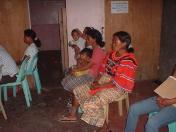

pammineg 
/pamminɔg/
Var. pamineg
v_rt.
“listen”
vt.
for someone (egpammineg, migpammineg/impammineg, agent, eg><ø-) to listen to something (egpamminehen, impammineg/migpammineg/pigpammineg, theme, eg><en-)
Egkeupian a ne egpammineg te ulahingen ke due eggimuen ku su eyew kenà a egkabeley.
I want to have a sound when working so that I will not be exhausted.
Pamminehen ta ka rahing.
We'll listen to the sound.
Eng. listen
Tag. makiníg
Ceb. paminaw
Ilo.: allingágen
OCM: Sensation and Perception (151)
DDP: Listen (2.3.2.1)
Online dict status: -
Usage level: F
v.
for someone (egpampammineg, migpampammineg/impampammineg, agent, eg><ø-paN-rdpCV-) to keep on listening
Eng. keep on listening
Online dict status: -
Usage level: M
Updated by: RJH,TME,QDL,RJH
Last updated: 21/Dec/2011
"pammineg" in healthbook "Mania te keilangan neg lu-luan ta ka me belad ta?"
"pammineha" in song "Iparani a ki Hisu Kristu"
"pammineg" in song "Kateuwi nu"
"pammineg" in song "Kateu ka te ngaran kayi?"
This page last updated: 19/May/2012
Copyright © 2009-2010, Matigsalug Language Christian Association, Inc